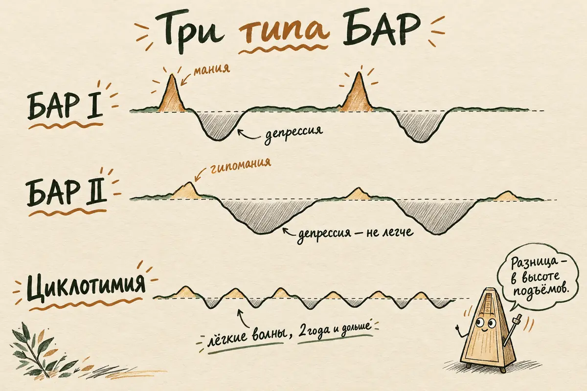
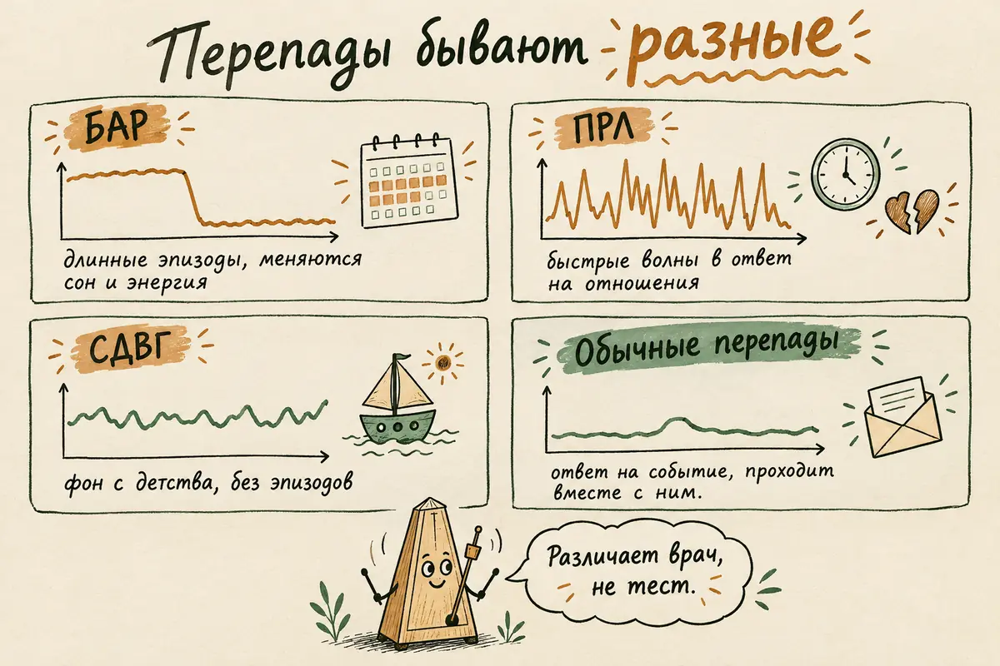
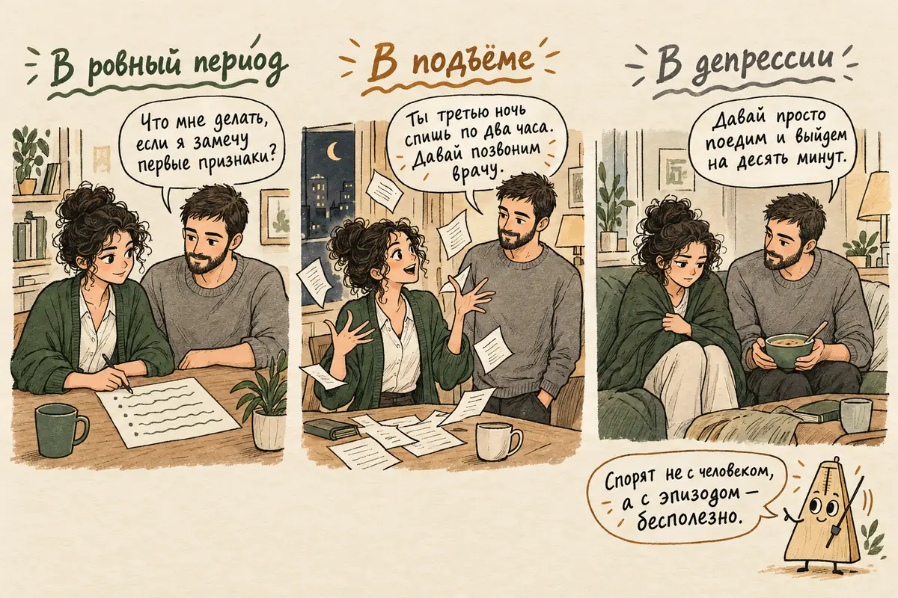

Главная → Блог → Биполярное расстройство
Биполярное расстройство: признаки мании и депрессии, типы, причины и лечение
Обновлено: 15.10.2026 · Источники проверены: 15.10.2026 · 22 минуты чтения
Подготовлено по клиническим рекомендациям Минздрава РФ и NICE, материалам ВОЗ, NHS и NIMH, описаниям в МКБ-11 и рецензируемым метаанализам
Биполярное аффективное расстройство (БАР) — это психическое расстройство, при котором периоды депрессии чередуются с периодами мании или более мягкой гипомании, когда энергии, активности и уверенности в себе становится заметно больше обычного, а потребность во сне падает. Между эпизодами человек часто чувствует себя ровно. Это не «перепады настроения» и не черта характера: БАР описан в международных классификациях, хорошо изучен и лечится, а при подобранной терапии многие живут годами без эпизодов. Ниже — как выглядят мания, гипомания и биполярная депрессия, чем БАР I отличается от БАР II, почему диагноз так часто ставят с опозданием, что помогает и как быть близким.
- Что такое биполярное расстройство
- Из чего складывается БАР: мания, гипомания, депрессия
- Признаки мании и гипомании
- Биполярная депрессия: чем она отличается от обычной
- Типы БАР: I, II и циклотимия
- Чем БАР отличается от ПРЛ, СДВГ и обычных перепадов настроения
- БАР у женщин и у мужчин
- Почему возникает биполярное расстройство
- Как ставят диагноз и почему так долго
- Как лечат биполярное расстройство
- Что можно делать самому
- Как помочь близкому с БАР
- Чем опасен БАР и какой прогноз
- Куда обращаться в России
- Частые вопросы
Что такое биполярное расстройство
Биполярное расстройство — это расстройство настроения, при котором у человека бывают очерченные эпизоды подъёма и спада, заметно отличающиеся от его обычного состояния. Слово «биполярное» означает два полюса: на одном депрессия, на другом мания или гипомания. В России диагноз ставят по МКБ-10, где он называется биполярным аффективным расстройством и кодируется F31; в новой классификации МКБ-11 выделены биполярное расстройство I типа (6A60), II типа (6A61) и циклотимия (6A62). Старое название — маниакально-депрессивный психоз — сейчас не используется: психоз бывает далеко не у всех.
Главное, что стоит запомнить: речь не о частой смене эмоций в течение дня, а об эпизодах, которые длятся днями, неделями и месяцами. В эпизоде меняется не одно настроение, а вся «энергетика»: сон, темп речи и мыслей, активность, аппетит, самооценка. Между эпизодами многие люди чувствуют себя обычно — работают, учатся, растят детей.
Это не редкость. По оценке ВОЗ, в 2023 году биполярным расстройством жили около 36 миллионов человек в мире — примерно каждый 226-й. В крупном исследовании Всемирного обследования психического здоровья на 61 тысяче взрослых в 11 странах на протяжении жизни БАР I типа встречался у 0,6% людей, БАР II типа — у 0,4%, а если считать мягкие, «подпороговые» формы спектра, — у 2,4%. Начинается расстройство обычно рано: пик первых эпизодов приходится на 15–25 лет.
Из чего складывается БАР: мания, гипомания, депрессия
БАР состоит из эпизодов трёх видов, и диагноз определяется тем, какие из них были у человека. Удобно представлять шкалу, на которой обычное настроение находится посередине.
- Мания — верх шкалы. Приподнятое или раздражительное состояние с резким приливом энергии, которое держится не меньше недели (или меньше, если понадобилась госпитализация) и серьёзно нарушает жизнь: человек не может работать как обычно, совершает поступки с тяжёлыми последствиями, иногда появляются бредовые идеи.
- Гипомания — ступенька ниже. Те же черты, но мягче: не меньше четырёх дней подряд, без психоза и без полного развала жизни. Окружающим перемена заметна, а самому человеку обычно нравится — он кажется себе продуктивным и интересным.
- Депрессия — низ шкалы. Подавленность или потеря интереса не меньше двух недель, вместе с упадком сил, нарушениями сна, чувством вины и мыслями о смерти.
- Смешанное состояние — черты обоих полюсов одновременно: например, тоска и безнадёжность вместе с беспокойным возбуждением, ускоренными мыслями и бессонницей. Это одно из самых тяжёлых и опасных состояний при БАР, потому что сочетает отчаяние и энергию для действия.
Пороги в четыре дня и неделю взяты из американской классификации DSM-5; в МКБ-11 формулировки похожие. Они важны не для самодиагностики, а чтобы понять, о чём спросит врач: «бодрый вечер» и «неделя без сна с ощущением всемогущества» — разные вещи.
Признаки мании и гипомании
Самая надёжная примета подъёма — сниженная потребность во сне: человек спит три-четыре часа и чувствует себя выспавшимся. Это отличает гипоманию от бессонницы, при которой хочется спать, но не получается, и утром человек разбит. Остальные признаки складываются вокруг прилива энергии.
- Энергия и активность выше обычного. Много дел одновременно, новые проекты, уборка ночью, ощущение, что можно всё.
- Приподнятое или раздражительное настроение. Часто забывают про второе: мания нередко выглядит не как веселье, а как вспыльчивость и нетерпимость к тем, кто «тормозит».
- Ускоренная речь и мысли. Трудно перебить, человек перескакивает с темы на тему, мыслям «тесно в голове».
- Завышенная самооценка. Уверенность в особом таланте, миссии, гениальном плане; в мании она может доходить до бредовых идей величия.
- Отвлекаемость. Внимание прыгает на всё вокруг, дела начинаются и бросаются.
- Рискованные поступки. Крупные траты и кредиты, внезапные увольнения и переезды, азартные игры, опасное вождение, случайные сексуальные связи, алкоголь.
- Повышенная общительность. Звонки знакомым среди ночи, сообщения десяткам людей, разговоры с незнакомцами.
Главная ловушка гипомании — она приятна. Человек работает за троих, легко знакомится, наконец-то делает то, что откладывал. Поэтому за помощью приходят в депрессии, а о «лучших неделях в году» врачу не рассказывают — не считают их проблемой. Близкие при этом часто замечают перемену раньше: «ты стал другим», «ты не спишь», «ты слишком много тратишь».
Биполярная депрессия: чем она отличается от обычной
По симптомам биполярная депрессия почти неотличима от обычной: те же подавленность, потеря интереса, усталость, чувство вины и мысли о смерти. Разница — в истории человека: был ли у него хотя бы раз эпизод подъёма. Именно поэтому британские рекомендации NICE советуют терапевтам спрашивать каждого взрослого с депрессией о прежних периодах повышенной активности или расторможенности и направлять к специалисту, если такой период длился четыре дня и дольше.
Депрессия при БАР обычно занимает больше времени, чем подъёмы, и тяжелее переносится. В исследовании Всемирного обследования психического здоровья выраженные нарушения повседневной жизни в депрессивных эпизодах были у 74% людей с БАР, а в маниакальных — у 51%. Подробно о том, как выглядит депрессия и что делать в ней, — в отдельной статье.
Есть приметы, при которых врач чаще задумывается о биполярной природе депрессии. Ни одна из них не доказывает БАР — это поводы для внимательного расспроса:
| Чаще при обычной депрессии | Чаще наводит на мысль о БАР | |
|---|---|---|
| Прежние подъёмы | Не было | Были периоды, когда энергии и уверенности было «слишком много» |
| Начало | Чаще во взрослом возрасте | Первая депрессия в подростковом или юношеском возрасте |
| Семья | БАР у родственников не встречался | У родителей, братьев или сестёр был БАР |
| Реакция на антидепрессант | Постепенное улучшение | Резкий «перескок» в бодрость, раздражительность, бессонницу |
| Сон и аппетит | Чаще бессонница и снижение аппетита | Чаще много сна, тяжесть в теле, повышенный аппетит |
| Течение | Отдельные эпизоды | Частые эпизоды, послеродовые эпизоды, сезонные смены |
Сезонность сама по себе не означает БАР: у многих людей настроение просто падает в тёмное время года. Чем осенний спад отличается от расстройства и когда светотерапия требует осторожности — в статье об осенней депрессии.
Типы БАР: I, II и циклотимия
Тип БАР определяется тем, насколько высоко поднимается верхний полюс. Это не «тяжёлый» и «лёгкий» варианты: при БАР II подъёмы мягче, но депрессии бывают такими же тяжёлыми и долгими, а иногда и более частыми.
- БАР I типа — был хотя бы один эпизод мании. Депрессии бывают у большинства, но для диагноза они не обязательны.
- БАР II типа — были эпизоды гипомании и хотя бы один эпизод депрессии, но ни разу не было полноценной мании. Если мания однажды случится, диагноз меняют на БАР I.
- Циклотимия — не меньше двух лет человек колеблется между лёгкими подъёмами и лёгкими спадами, которые не дотягивают до полных эпизодов, а ровных периодов почти нет. В России её кодируют отдельно, как F34.0.
Врач может также отметить особенности течения: быстрая цикличность — четыре эпизода и больше за год; смешанные черты — признаки противоположного полюса внутри эпизода; сезонный характер; начало эпизода в течение месяца после родов.
| БАР I | БАР II | Циклотимия | |
|---|---|---|---|
| Верхний полюс | Мания | Гипомания | Лёгкие подъёмы |
| Нижний полюс | Депрессия у большинства, но не обязательна | Обязательна хотя бы одна депрессия | Лёгкие спады |
| Психоз | Возможен в мании и депрессии | В гипомании не бывает | Не бывает |
| Как замечают | Чаще всего по мании — её трудно не заметить | Чаще всего по депрессии, гипомания проходит незамеченной | «Такой характер» — годами не обращаются |

Чем БАР отличается от ПРЛ, СДВГ и обычных перепадов настроения
Резкие смены настроения дают несколько разных состояний, и главная примета БАР — очерченные эпизоды, в которых вместе с настроением меняются сон и уровень энергии. Лечатся эти состояния по-разному, поэтому самостоятельный вывод здесь особенно рискован.
Пограничное расстройство личности
При ПРЛ эмоции переключаются быстро — за часы — и чаще в ответ на события в отношениях: холодность, молчание, страх быть брошенным. При БАР эпизод держится днями и неделями и во многом идёт по своей логике, хотя стресс может его запустить. Оба состояния нередко сочетаются, и различить их может только врач. Подробно — в статье о пограничном расстройстве личности.
СДВГ у взрослых
Отвлекаемость, импульсивность и «много идей» бывают и при СДВГ, но там они фоновые и тянутся с детства, а не приходят эпизодами. Человек с СДВГ не начинает вдруг спать по три часа, оставаясь бодрым. Эти состояния тоже нередко сочетаются. Как выглядит взрослый СДВГ — в отдельном разборе.
Обычные перепады и реакция на события
Подъём после хорошей новости, бессонная ночь перед важным событием, раздражительность от усталости — это реакции на обстоятельства. Они понятны, соразмерны и проходят вместе с причиной. Эпизод при БАР выглядит иначе: он заметно отличается от обычного «я» человека, его замечают окружающие и он не объясняется происходящим.
Вещества и соматические причины
Состояния, похожие на манию, дают стимуляторы, некоторые наркотики, высокие дозы гормональных препаратов, а также повышенная функция щитовидной железы. Поэтому врач обычно назначает анализы и спрашивает о лекарствах и веществах, прежде чем говорить о БАР.
| БАР | ПРЛ | СДВГ | Обычные перепады | |
|---|---|---|---|---|
| Как идут перемены | Очерченными эпизодами | Быстрые волны в течение дня | Фоном, без эпизодов | В ответ на события |
| Сколько держится | Дни, недели, месяцы | Часы, иногда несколько дней | Всю жизнь, с детства | Проходит вместе с причиной |
| Сон | В подъёме мало сна без усталости | Меняется вместе с переживаниями | Часто сбит режим | Ненадолго нарушается |
| Что в центре | Уровень энергии и активности | Отношения и образ себя | Внимание и самоорганизация | Конкретное событие |
| Основное лечение | Стабилизаторы настроения плюс психотерапия | Специализированная психотерапия | Лекарства и поведенческие стратегии | Не нужно |

БАР у женщин и у мужчин
БАР I типа встречается у мужчин и женщин примерно одинаково часто, но проявляется у них по-разному. Российские клинические рекомендации указывают, что в целом расстройство чаще диагностируют у женщин — примерно в соотношении 3:2.
У женщин чаще встречаются БАР II типа, депрессивные эпизоды, смешанные состояния и быстрая цикличность. Отдельная тема — период после родов: это время самого высокого риска эпизода. В метаанализе 37 исследований у женщин с БАР, которые во время беременности не принимали поддерживающее лечение, обострение после родов случилось в 66% случаев, а у тех, кто принимал, — в 23%. Это не повод самостоятельно продолжать или бросать препараты: беременность при БАР планируют вместе с психиатром заранее, потому что часть препаратов (прежде всего вальпроаты) опасна для плода, а у других есть свои условия приёма. Чем послеродовая депрессия отличается от более тяжёлых состояний — в статье о послеродовой депрессии.
У мужчин чаще первым эпизодом бывает мания, и она чаще выглядит как раздражительность, конфликтность, рискованные поступки и алкоголь. Мужчины реже обращаются за помощью в депрессии, и подъём нередко принимают за «характер» или «кризис». Если алкоголь стал способом справляться с бессонницей или тревогой — посмотрите разбор о связи алкоголя и тревоги: при БАР он особенно опасен, потому что сам расшатывает настроение.
Почему возникает биполярное расстройство
БАР — одно из самых наследуемых психических расстройств, но гены задают предрасположенность, а не приговор. В шведском исследовании по национальным регистрам, где учли больше 54 тысяч людей с БАР, наследуемость оценили в 58%, а риск у родственников первой степени — родителей, братьев, сестёр, детей — оказался в 5,8–7,9 раза выше, чем в популяции. При этом у большинства детей людей с БАР расстройство не развивается.
Единого «гена БАР» нет: предрасположенность складывается из множества вариантов генов, частично общих с депрессией и шизофренией. На этом фоне эпизод чаще всего запускают:
- недосып и сбой режима — бессонные ночи, смены часовых поясов, ночные смены; это один из самых изученных пусковых факторов подъёма;
- сильный стресс — потери, конфликты, переезды, но и радостные перемены вроде новой работы;
- алкоголь, стимуляторы и наркотики, включая каннабис;
- роды и гормональные перемены;
- некоторые лекарства — прежде всего антидепрессанты без стабилизатора настроения, а также высокие дозы гормональных препаратов;
- резкая отмена поддерживающего лечения — одна из частых причин нового эпизода.
Как ставят диагноз и почему так долго
Биполярное расстройство диагностирует психиатр на основе подробного расспроса о прошлых эпизодах; анализа крови или снимка, который бы его показал, не существует. Анализы и обследования нужны, чтобы исключить другие причины: болезни щитовидной железы, действие веществ и лекарств, неврологические заболевания.
Диагноз почти всегда ставят с опозданием. В метаанализе 59 исследований с участием больше 40 тысяч человек от первых симптомов до диагноза проходило в среднем (по медиане) 6,7 года: заболевание начинается в 15–25 лет, а правильный диагноз и рекомендованное лечение приходят в 25–35. Российские клинические рекомендации приводят ещё более жёсткую оценку: 60–70% людей с БАР сначала получают другой диагноз, чаще всего «депрессия». В свежем обзоре 2025 года период без диагноза дольше, если первым эпизодом была депрессия, если болезнь началась рано и если рядом тревога или алкоголь.
В России разрыв особенно заметен. По данным государственной статистики, которые приводят те же клинические рекомендации Минздрава, в 2022 году было зарегистрировано 2,24 человека с БАР на 100 тысяч населения — то есть сотые доли процента при ожидаемом уровне около 1%. Это значит, что большинство людей с БАР живут без диагноза или с другим диагнозом.
Что поможет врачу поставить диагноз быстрее:
- расскажите о подъёмах, а не только о спадах — даже если они казались лучшим временем жизни;
- возьмите на приём близкого или попросите его записать, что он замечал: со стороны подъёмы видны лучше;
- несколько недель ведите дневник настроения — настроение, часы сна, энергия, события; российские рекомендации прямо предлагают такую карту самонаблюдения;
- расскажите о семье — были ли у родственников депрессии, мании, госпитализации, самоубийства;
- перечислите лекарства и вещества, включая антидепрессанты в прошлом и реакцию на них.
Как лечат биполярное расстройство
Основа лечения БАР — лекарства, которые стабилизируют настроение и принимаются долго, в сочетании с психообразованием и психотерапией. Лечение решает три задачи: вывести из текущего эпизода, удержать результат и предотвратить следующие эпизоды. Последняя задача — главная, и именно поэтому терапия длится годами, а не неделями.
Лекарства
- Стабилизаторы настроения (нормотимики). Классический — литий: NICE предлагает его как препарат первой линии для длительного лечения. В метаанализе 48 рандомизированных исследований литий снижал число самоубийств по сравнению с плацебо. Литий требует регулярных анализов крови — концентрации препарата, работы почек и щитовидной железы. Используются и другие нормотимики, выбор зависит от течения болезни и переносимости.
- Антипсихотики нового поколения применяются и в остром эпизоде, и для поддерживающего лечения — особенно когда литий не подходит.
- Антидепрессанты — с осторожностью. ВОЗ указывает, что их не принимают в маниакальном эпизоде, а в депрессии могут сочетать со стабилизатором или антипсихотиком. Антидепрессант в одиночку при БАР может спровоцировать переход в подъём или учащение эпизодов, поэтому NICE советует при появлении мании на фоне одного антидепрессанта рассмотреть его отмену.
- Вальпроаты не назначают девочкам и женщинам, которые беременны, кормят грудью или могут забеременеть, — это отдельно подчёркивают и ВОЗ, и NICE.
Психообразование и психотерапия
Психотерапия при БАР не заменяет лекарства, но заметно усиливает их действие. Российские клинические рекомендации 2025 года рекомендуют психообразование всем пациентам с БАР и их родственникам: понять природу болезни, научиться распознавать ранние признаки эпизода и держаться за длительное лечение. В сетевом метаанализе 39 исследований структурированные программы психотерапии в дополнение к лекарствам были связаны с заметно меньшим числом рецидивов, причём психообразование в семейном или групповом формате работало лучше индивидуального.
- Психообразование — курс о том, как устроена болезнь, как действуют препараты и как распознать начало эпизода.
- Когнитивно-поведенческая терапия помогает справляться с депрессивными эпизодами и замечать мысли, которые подстёгивают подъём.
- Семейная терапия снижает напряжение в семье и учит близких реагировать на ранние признаки, не превращаясь в надзирателей.
- Межличностная терапия социальных ритмов построена вокруг стабильного режима сна, еды и активности — потому что сбой ритма у людей с БАР часто запускает эпизод.
В остром эпизоде, особенно в мании с психозом или при угрозе жизни, может понадобиться лечение в стационаре. Это временная мера, чтобы безопасно выйти из эпизода, а не «приговор».
Что можно делать самому
Самопомощь при БАР не заменяет лечение, но во многом определяет, как часто будут эпизоды. Эти шаги дополняют терапию и хорошо работают в паре с врачом.
- Берегите сон как лекарство. Ложитесь и вставайте в одно и то же время, в том числе в выходные. Сокращение сна — одновременно и признак, и пусковой фактор подъёма: если вы вдруг спите меньше и не устаёте, это сигнал, а не подарок. О том, как наладить сон, — в статье о бессоннице.
- Ведите дневник настроения. Каждый день по шкале от −5 до +5: настроение, часы сна, энергия, лекарства, важные события. Через месяц станут видны закономерности, которые невозможно увидеть изнутри эпизода, а врачу будет на что опереться.
- Составьте список своих ранних признаков. У каждого они свои: кто-то начинает много говорить по телефону, кто-то делать покупки, кто-то перестаёт есть. Запишите три-пять примет подъёма и три-пять примет спада — вместе с близким, он заметит то, чего не замечаете вы.
- Заранее договоритесь, что делать при первых признаках. План на листе: кому позвонить, когда связаться с врачом, что отменить. NICE рекомендует составлять такой план вместе с врачом и близким — в эпизоде придумывать его уже поздно.
- Поставьте предохранители на деньги. Лимиты на картах, отложенные покупки дороже определённой суммы, самозапрет на кредиты через Госуслуги, договорённость с близким о крупных тратах — пока вы в ровном состоянии.
- Отложите большие решения. Увольнение, переезд, развод, крупное вложение — не в эпизоде. Если идея хорошая, она останется хорошей через месяц.
- Откажитесь от алкоголя и веществ или сведите их к минимуму: они расшатывают настроение, мешают сну и ослабляют действие препаратов.
- Держите ровный ритм дня. Еда, движение, встречи с людьми примерно в одно и то же время. Это скучно, но именно на ритме построен один из подходов психотерапии при БАР.
Между приёмами у врача бывает трудно понять, «это уже начинается» или просто хороший день. В AI Therapist можно спокойно описать своё состояние словами, разобрать записи дневника настроения и подготовить вопросы к психиатру — без регистрации и в любое время суток. Это не лечение и не замена врача или экстренной помощи.
Как помочь близкому с БАР
Близким при БАР нужно помнить одно: в эпизоде человек говорит и действует под влиянием болезни, и спорить с эпизодом бесполезно — договариваться нужно с человеком между эпизодами.
В ровном периоде
- Обсудите вместе ранние признаки и план: что вы будете делать, если заметите их, и что человек разрешает вам сделать — позвонить врачу, забрать карту, приехать.
- Узнайте о болезни: психообразование для родственников — часть рекомендованного лечения, а не любезность.
- Поддерживайте лечение, но не превращайтесь в контролёра таблеток: упрёки работают хуже, чем совместный план.
В подъёме
- Говорите спокойно и коротко, не вступайте в спор о гениальности планов — он только раззадоривает.
- Опирайтесь на факты, которые сложно оспорить: «ты третью ночь спишь по два часа, давай позвоним врачу».
- Уберите лишние раздражители, не подстёгивайте активность, помогите сохранить сон.
- Защищайте общие деньги и документы — по заранее согласованному плану.
- Если появились бредовые идеи, агрессия или угроза жизни — вызывайте помощь, не пытаясь справиться самостоятельно.
В депрессии
- Не требуйте «взять себя в руки» — это не лень. Помогите с простыми делами: еда, лекарства, душ, короткая прогулка.
- Спрашивайте о мыслях о смерти прямо. Вопрос «ты думаешь о том, чтобы не жить?» не подталкивает к поступку, а открывает разговор.
- Если ответ «да» — не оставляйте человека одного и свяжитесь с врачом или экстренными службами.
И позаботьтесь о себе. Жить рядом с человеком с БАР тяжело, особенно в первые годы, пока не подобрано лечение. Своя опора, своя терапия или группа для родственников — не эгоизм, а условие, при котором вы сможете быть рядом долго. Как поддерживать человека, когда ему плохо, и не сгореть самому, — в статье о том, как поддержать человека в трудный период.

Чем опасен БАР и какой прогноз
Без лечения БАР — серьёзное и опасное расстройство, с лечением — управляемое хроническое состояние, при котором многие годами живут без эпизодов. Обе половины этой фразы правдивы, и честнее сказать о них сразу.
Опасность прежде всего в риске самоубийства. По оценке российских клинических рекомендаций, риск завершённого суицида при БАР в течение жизни в 20–30 раз выше, чем в популяции, и выше, чем при обычной депрессии. Особенно опасны депрессивные и смешанные эпизоды, а также первые годы после начала болезни. По данным ВОЗ, люди с БАР в среднем живут на 13 лет меньше. Разница складывается не только из самоубийств: у людей с БАР чаще встречаются болезни сердца, диабет и последствия алкоголя, а лечат их нередко позже, чем у остальных. Ещё три четверти людей с БАР имеют хотя бы одно сопутствующее расстройство, чаще всего тревожное.
Но есть и вторая сторона:
- подобранное поддерживающее лечение заметно сокращает число и тяжесть эпизодов, а литий снижает риск самоубийства;
- психообразование и психотерапия вместе с лекарствами уменьшают число рецидивов;
- многие люди с БАР работают, строят семьи и растят детей — особенно когда научились замечать ранние признаки;
- чем раньше поставлен диагноз и начато правильное лечение, тем лучше прогноз.
Что ухудшает прогноз: самостоятельная отмена препаратов, алкоголь и наркотики, хронический недосып и долгая жизнь с неправильным диагнозом, когда депрессию годами лечат одними антидепрессантами.
Куда обращаться в России
Диагностикой и лечением БАР занимается психиатр. Бесплатно попасть к нему можно по полису ОМС — в психоневрологическом диспансере по месту жительства или через направление от терапевта. Психолог и психотерапевт без медицинского образования диагноз не ставят и лекарства не назначают, но могут вести психообразование и психотерапию параллельно с лечением у врача.
Про «постановку на учёт». Того, что в быту называют учётом, в законе нет — есть диспансерное наблюдение. Его устанавливает комиссия врачей-психиатров при хроническом или затяжном расстройстве с тяжёлыми стойкими или часто обостряющимися проявлениями, и оно не пожизненное: при стойком улучшении его прекращают. Сам факт консультации наблюдения не означает. Мы не даём юридических консультаций и не обещаем, что диагноз ни на что не влияет: наблюдение может учитываться при некоторых медицинских справках. Подробный разбор со ссылками на закон и список бесплатных служб — в справочнике помощи.
Срочно — в тот же день или через 112 — нужна помощь, если человек несколько суток не спит, высказывает бредовые идеи, ведёт себя агрессивно, говорит о самоубийстве или совершает поступки, опасные для него и окружающих.
Частые вопросы
Что такое биполярное расстройство простыми словами?
Это расстройство настроения, при котором периоды депрессии чередуются с периодами мании или гипомании — когда энергии и уверенности в себе становится заметно больше обычного, а потребность во сне падает. Эпизоды длятся днями, неделями и месяцами, а между ними человек часто чувствует себя ровно. Это не черта характера, а состояние, которое описано в международных классификациях и лечится.
Как понять, что это биполярное расстройство, а не просто перепады настроения?
При БАР перемены идут очерченными эпизодами, и вместе с настроением меняются сон, энергия и активность: человек спит три-четыре часа и не устаёт, говорит быстрее, строит планы и тратит деньги. Обычные перепады — это реакции на события, которые проходят вместе с причиной. Поставить диагноз может только психиатр, и для этого ему важно знать не только о спадах, но и о подъёмах.
Чем отличаются БАР I и БАР II типа?
При БАР I типа был хотя бы один эпизод мании — выраженного подъёма, который нарушает жизнь и может сопровождаться психозом. При БАР II типа были эпизоды более мягкой гипомании и хотя бы один эпизод депрессии, но ни разу не было полной мании. БАР II не легче: депрессии при нём бывают такими же тяжёлыми и долгими.
Передаётся ли биполярное расстройство по наследству?
Предрасположенность к БАР во многом наследуется: в шведском исследовании по национальным регистрам наследуемость оценили в 58%, а риск у родственников первой степени был в 5,8–7,9 раза выше, чем в популяции. Но передаётся именно предрасположенность, а не болезнь: у большинства детей людей с БАР расстройство не развивается.
Можно ли вылечить биполярное расстройство?
БАР считается хроническим расстройством, но хорошо поддаётся контролю. При подобранном поддерживающем лечении многие люди годами живут без эпизодов, работают и строят семьи. Основа — стабилизаторы настроения, которые принимают долго, вместе с психообразованием, психотерапией и ровным режимом сна.
Можно ли лечить биполярное расстройство без таблеток?
Как основной метод — нет: и российские, и международные рекомендации называют основой лечения препараты-стабилизаторы настроения. Психотерапия, психообразование и режим сна заметно уменьшают число эпизодов, но работают вместе с лекарствами, а не вместо них. Если препарат плохо переносится, это повод обсудить замену с врачом, а не отказаться от лечения.
Почему при биполярном расстройстве опасно принимать только антидепрессанты?
Антидепрессант без стабилизатора настроения может спровоцировать у человека с БАР переход в манию или гипоманию и учащение эпизодов. Поэтому при биполярной депрессии антидепрессанты если и назначают, то вместе со стабилизатором или антипсихотиком. Важно рассказать врачу о прежних периодах подъёма, даже если они казались лучшим временем жизни.
Как вести себя с человеком в мании?
Говорите спокойно и коротко, не спорьте о его планах и опирайтесь на факты, которые трудно оспорить, — например, что он третью ночь почти не спит. Помогите сохранить сон и защитить деньги по заранее согласованному плану и свяжитесь с врачом. Если появились бредовые идеи, агрессия или угроза жизни, вызывайте помощь через 112.
К какому врачу идти при подозрении на биполярное расстройство?
Диагноз ставит психиатр на очной консультации, в России к нему можно попасть бесплатно по полису ОМС. Консультация сама по себе не означает диспансерного наблюдения: его устанавливает комиссия врачей-психиатров при хроническом или затяжном расстройстве с тяжёлыми стойкими проявлениями. Перед приёмом полезно несколько недель вести дневник настроения и сна.
Как подготовлен материал. Текст подготовлен редакцией AI Therapist. Мы опираемся на клинические рекомендации Минздрава РФ и NICE, материалы ВОЗ, NHS и NIMH, описания расстройств в МКБ-11 и рецензируемые метаанализы; цифры приводим по первоисточникам и ставим ссылки рядом с ними. О лекарствах мы пишем только то, что прямо следует из рекомендаций, и не называем доз: схему лечения подбирает врач. Материал носит просветительский характер и не заменяет консультацию врача: биполярное расстройство может определить только психиатр на очной консультации.
Источники: Клинические рекомендации «Биполярное аффективное расстройство», Российское общество психиатров, Минздрав РФ, 2025, МКБ-11, ВОЗ — биполярные расстройства (6A60–6A62), ВОЗ — Bipolar disorder, информационный бюллетень, NICE CG185 — Bipolar disorder: assessment and management (обновлено в 2025), NHS — Bipolar disorder, NIMH — Bipolar Disorder, McIntyre R. S. et al. «Bipolar disorders», The Lancet, 2020, Merikangas K. R. et al. «Prevalence and correlates of bipolar spectrum disorder in the World Mental Health Survey Initiative», Archives of General Psychiatry, 2011, Scott J. et al. «A systematic review and meta-analysis of delayed help-seeking, delayed diagnosis and duration of untreated illness in bipolar disorders», Acta Psychiatrica Scandinavica, 2022, «Duration of untreated or undiagnosed bipolar disorder and clinical outcomes», British Journal of Psychiatry, 2025, Song J. et al. «Bipolar disorder and its relation to major psychiatric disorders: a family-based study in the Swedish population», Bipolar Disorders, 2015, Cipriani A. et al. «Lithium in the prevention of suicide in mood disorders», BMJ, 2013, Miklowitz D. J. et al. «Adjunctive Psychotherapy for Bipolar Disorder: A Systematic Review and Component Network Meta-analysis», JAMA Psychiatry, 2021, Wesseloo R. et al. «Risk of Postpartum Relapse in Bipolar Disorder and Postpartum Psychosis: A Systematic Review and Meta-Analysis», American Journal of Psychiatry, 2016.
Кто отвечает за содержание сайта и по каким правилам мы готовим материалы — на странице о проекте.
Читать также
- Депрессия: признаки и что делать — как выглядит депрессивный эпизод и с чего начать.
- Пограничное расстройство личности — состояние, которое чаще всего путают с БАР.
- СДВГ у взрослых — когда импульсивность и «много идей» тянутся с детства.
- Послеродовая депрессия — признаки, отличия от более тяжёлых состояний и куда обращаться.
- Осенняя депрессия — сезонный спад настроения и когда светотерапия требует осторожности.
- Бессонница при тревоге — как вернуть сон, который при БАР особенно важен.
- Тест на депрессию PHQ-9 — оценить выраженность депрессии перед приёмом у врача.